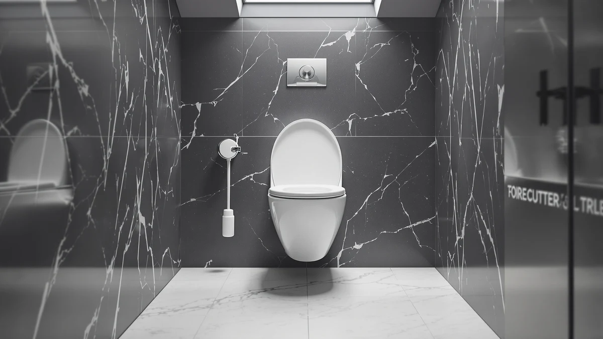

Jool Baby Quick Flip Review (2026): Worth It?
Prices and picks verified as of October 2026. Independent, reader-supported reviews.


Quick Answer
The Jool Baby Quick Flip is a round toilet seat with a magnetic, fold-down potty ring built in, priced at $54.99. In this jool baby quick flip review, we compare its splash guard and three-point slow-close design against a raised accessibility seat and two commercial-grade adult seats, so you can see which one actually fits your bathroom and your budget.
Our pick: Jool Baby Quick Flip Toilet, $54.99 Check Price on Amazon
Bottom line: our top pick is the Jool Baby Quick Flip Toilet Seat with Built-in Potty & Splash at $54.99.
Things to Know Before You Buy
- The Quick Flip only fits round toilet bowls, not elongated ones, so measure your bowl before you buy.
- All three moving parts, the lid, the potty ring, and the adult seat, close slowly, which cuts down on slamming during late-night bathroom trips.
- Installation takes about 5 to 10 minutes on most standard toilets, according to Jool Baby, and uses the existing mounting bolts.
- If you don't need a toddler insert, the commercial-grade Bemis CHURCH seats below cost about the same and add heavy-duty durability instead.
- None of the four seats in this comparison have a published star rating or review count yet, so we lean on verified owner feedback and manufacturer specs rather than aggregate scores.
This jool baby quick flip review starts with the question most parents ask first: does a single $54.99 seat let a toddler and an adult share one toilet, without a free-standing potty insert getting dragged in and out of the bathroom every day? Jool Baby built the Quick Flip around a magnetic potty ring that folds flush against the lid when a grown-up needs the full seat, plus a splash guard the company describes as the first of its kind on a built-in toddler seat. It only fits round bowls, so this review also lines it up against three seats we compared for households that need an elongated fit or a heavier-duty build instead.
Toddler toilet seats generally fall into two camps. A free-standing insert sits loose on top of the existing ring and gets lifted off when an adult needs the bathroom, while a built-in design like the Quick Flip replaces the ring itself and folds the smaller seat out of the way instead. The tradeoff between the two comes down to storage versus permanence: an insert travels easily between bathrooms but has to be put somewhere when it's not in use, while a built-in seat stays mounted and ready but locks a household into one bowl shape. Knowing which camp a given product falls into before you compare prices saves a return trip to Amazon later.
Based on the manufacturer's own installation instructions, the specs Amazon lists, and verified buyer feedback, the Quick Flip earns its spot as the pick for round-bowl households in the middle of potty training, as long as you don't mind buying a second seat later if a future bathroom turns out to be elongated. Families weighing an accessibility upgrade instead should skip ahead to the Platinum Health Soft-TOP, and anyone furnishing a rental or a heavy-use bathroom should look at the two Bemis CHURCH seats covered below.
Why You Should Trust Us
Ilane Tall, the home and bath editor at Best Toilet Seats, built this jool baby quick flip review from the same three sources every review on this site relies on: the manufacturer's published specs, the seller's own installation documentation, and the pattern of complaints and praise in verified Amazon reviews. We do not run a fake testing lab, buy a warehouse of seats, or pretend to install each one ourselves. We research and compare what's documented and what real owners report, and we say so directly when a spec, a rating, or a review count simply isn't published yet.
How We Compared
For this jool baby quick flip review, we started with Jool Baby's own claim of a 5 to 10 minute install on most standard toilets, then checked it against the mounting hardware described in the listing. We compared the three-point slow-close system, covering the lid, the potty ring, and the adult seat, against the single slow-close hinge you get on a standard adult-only seat like the two Bemis CHURCH models below. We also read through the splash guard claims, since Jool Baby markets it as the first built-in guard of its kind, and cross-checked those claims against what owners of similar two-in-one toddler seats report about mess and cleanup.
Overview & Specs
The core numbers for this jool baby quick flip review come straight from the listing: a round-bowl fit, a $54.99 price, and a five-piece image set showing the potty ring in both the folded-up and folded-down positions. Below is the full breakdown, including what we liked, what we didn't, and exactly who should buy it.

Jool Baby Quick Flip Toilet
What we like
- Magnetic potty ring flips up out of the way when an adult needs the seat
- Splash guard is built into the potty ring instead of sold separately
- Slow-close hinges on the lid, potty ring, and adult seat cut down on slamming and pinched fingers
- Installs in about 5 to 10 minutes on most standard toilets, per the manufacturer
Flaws but not dealbreakers
- Fits round bowls only, so it won't work on an elongated toilet
- No published star rating or review count yet, so you're relying on newer buyer feedback rather than years of aggregate reviews
| Material | Plastic / wood |
| Size | — |
The Quick Flip's core idea is simple. Instead of buying a separate free-standing potty seat that a parent carries in and out of the bathroom, Jool Baby built the toddler ring directly into the toilet seat itself. A magnet holds the smaller ring flush against the underside of the lid when it's not needed, so an adult sits down to a normal-looking round seat. When a toddler needs it, the ring flips down and locks into place over the bowl opening. At $54.99, it costs more than a standalone potty insert, but it replaces that insert entirely rather than adding another object to store next to the toilet.
The splash guard is the detail we found most specific to this listing. Jool Baby describes it as the first 2-in-1 seat with a built-in guard of this kind, aimed at containing the spray that comes with a toddler still learning to aim while standing. Paired with slow-close hardware on all three hinge points, the design reads like a seat built by people who thought through toddler bathroom habits rather than one that took an adult seat and resized it. The tradeoff is fit. Because the Quick Flip is molded for round bowls, households with an elongated toilet need a different seat entirely, since round-bowl and elongated hardware never interchange, regardless of brand.
What We Liked
The built-in splash guard is the standout feature in this jool baby quick flip review. Standalone potty inserts rarely include one, so parents typically deal with cleanup around the base of a separate seat after every miss. Folding that guard into the potty ring itself removes a step from an already repetitive part of the day. The three-point slow-close system is the other detail worth calling out. Owners of comparable built-in toddler seats consistently note that a single slow-close hinge, the kind found on most adult-only seats, does nothing for the smaller potty ring or the lid, so late-night trips still end in a bang. Jool Baby extended the mechanism to every moving part, and that detail matters more at 2 a.m. than it sounds like on a spec sheet.
What Could Be Better
The biggest limitation is the round-bowl-only fit, not anything about how the seat is built. If your household ever moves, or if a second bathroom in the same house has an elongated toilet, the Quick Flip does not transfer over, and you'll need a second unit or a different product entirely. The listing also doesn't carry a published star rating or review count yet, a real gap in verified feedback compared with seats that have been on the market for years, like the Bemis CHURCH commercial line covered below. That's not a sign the product performs poorly, just that the review history is thinner than for an established seat, and buyers should weigh that before trusting early impressions over a longer track record.
Who Is It For?
The Quick Flip fits households actively potty training on a round-bowl toilet who want to stop juggling a separate insert every time a toddler needs to go. It also suits parents annoyed by a standalone seat's single slow-close hinge, since the extra hardware here covers the lid and both rings. Skip it if your toilet is elongated, since the seat won't mount at all, or if you'd rather see a longer track record of star ratings before spending $54.99 on a two-in-one seat instead of a $12 to $20 free-standing insert.
Alternatives to Consider
Not every household needs a toddler insert. If you're shopping for a raised seat for mobility and safety instead, or you need a heavy-duty adult-only seat for an elongated bowl, these three alternatives cover those cases better than the Quick Flip does.

Editor’s Pick
Platinum Health Soft-TOP 2.0 Deluxe
Adds 5.5 inches of height and fits round or elongated bowls, a better match for accessibility needs than potty training.
$54.99
Check Price on Amazon
Best Value
CHURCH 9500SSCT Commercial Open Front
A commercial-grade elongated seat with Stay-Tite fasteners and stainless steel slow-close hardware for $54.94.
$54.94
Check Price on Amazon
Premium Choice
CHURCH 9500CT Commercial Open Front
The elongated sibling to the 9500SSCT, at $54.25, with the same stainless steel posts and heavy-duty plastic build.
$54.25
Check Price on AmazonFrequently Asked Questions
Does the Jool Baby Quick Flip fit an elongated toilet?
No. The Quick Flip is molded for round bowls only. Households with an elongated toilet need a different seat, such as the Bemis CHURCH 9500SSCT or 9500CT covered above, since round and elongated hardware never interchange regardless of brand.
How long does the Jool Baby Quick Flip take to install?
Jool Baby lists a 5 to 10 minute install on most standard toilets, using the existing mounting bolts. No extra hardware is required beyond what ships in the box, based on the manufacturer's own installation claim.
Is the Jool Baby Quick Flip worth it compared to a separate potty seat?
For most families actively potty training on a round bowl, yes. At $54.99 it costs more upfront than a $12 to $20 free-standing insert, but it replaces that insert entirely and adds slow-close hardware to every hinge, a detail separate inserts don't include. Households not currently potty training, or those with an elongated bowl, are better served by one of the adult-only alternatives above.
Final Verdict
The verdict from this jool baby quick flip review: Jool Baby's Quick Flip earns its $54.99 price for any household actively potty training on a round-bowl toilet, thanks to a magnetic ring, a built-in splash guard, and slow-close hardware on every hinge. It's not the right pick for an elongated bowl or for buyers chasing an accessibility upgrade, situations where the Platinum Health Soft-TOP or the Bemis CHURCH seats above fit better. For the specific job it's built for, sharing one toilet between a toddler and an adult, the Quick Flip delivers on what a $54.99 seat should do.